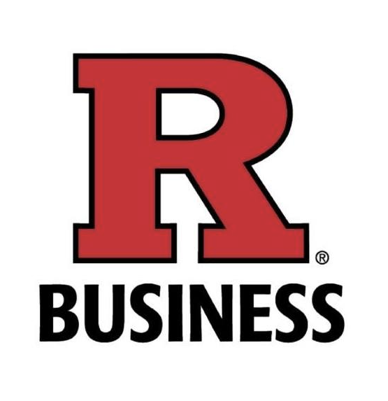

About Me
I’m Arun Govind, a data-driven strategist and financial engineer focused on uncovering structure in uncertainty. My journey spans electrical systems at NIT Delhi, automation at Americana, and quantitative finance at Rutgers.
I bridge quantitative finance and applied AI: regime modeling with ARIMA–GARCH, tail-risk with vine copulas, and portfolio optimization with CVaR and HRP, I enjoy work that blends code, markets, and rigorous theory.
Whether forecasting volatility on LOB data or automating workflows with RPA/VBA, I prioritize robust, transparent financial systems that adapt to volatility and empower decision-makers through evidence, not intuition.
Education

Rutgers Business School, Newark – Master of Quant. Finance
May 2023 – May 2025Courses: Financial Modeling, Stochastic Calculus, Risk Management, Quantitative Equity Trading, Term Structure Models, AI Methods

Indian Institute of Technology, Guwahati – PGDC in AI & ML
Aug 2020 – Oct 2021Courses: Deep Learning, Reinforcement Learning, PGMs, Computer Vision, Scalable Querying, Image Hashing
Oxford Brookes, UK – ACCA
Jan 2020 – Jun 2023Courses: Financial Accounting, Management Accounting, Financial Management, Performance Management (ACCA Reg #: 4939516)

IBMI Berlin – Global Governance
Aug 2018 – Aug 2019Diplomas: Global Governance, International Law, International Politics, Essential Management Skills
National Institute of Technology, Delhi – B.Tech in Electrical Engineering
Aug 2016 – May 2020Courses: Computational Engineering, Signal Processing, Embedded Optimization, Field Modeling